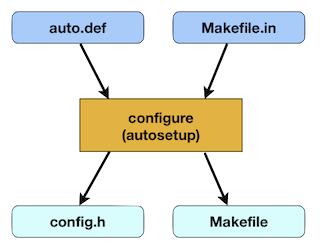

Introduction to autosetup

autosetup is a tool, similar to autoconf, to configure a build system for the appropriate environment, according to the system capabilities and the user-selected options.
autosetup is designed to be light-weight, fast, simple and flexible.
Notable features include:
- Easily check for headers, functions, types for C/C++
- Easily support user configuration options
- Can generate files based on templates, such as Makefile.in => Makefile
- Can generate header files based on checked features
- Excellent support for cross compilation
- Replacement for autoconf in many situations
- Runs with either Tcl 8.5+, Jim Tcl or just a C compiler (using the included Jim Tcl source code!)
- autosetup is intended to be distributed with projects - no version mismatch issues
autosetup is particularly targeted towards building C/C++ applications on Unix systems, however it can be extended for other environments as needed.
autosetup is not:
- A complete build system
- A replacement for automake
- Intended to replace all possible uses of autoconf
Getting Started
- Building an autosetup-enabled project (for users)
- Adding autosetup support to a project (for developers)